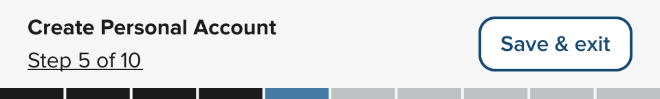
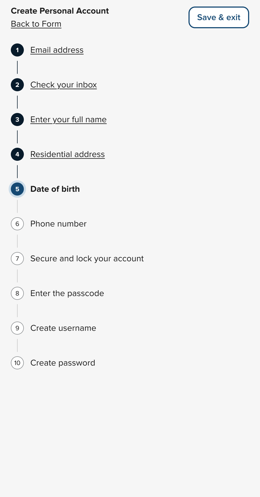
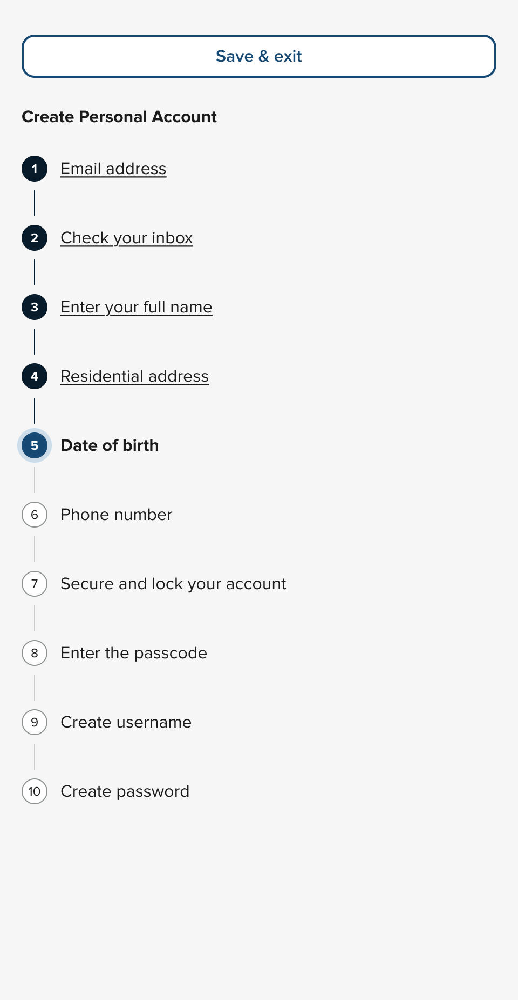

NYS Design System Release 1.8.0 “Adirondack”
Create step-by-step user flows easier with the new <nys-stepper> component!
Step by step
The new <nys-stepper> component helps you break down a complex process into simple steps. It is built with options to make it "dumb" (simple HREF links for steps) or "smart" (can use JS to trigger events onClick()). For more information, read the full documentation for the <nys-stepper>.
Mobile
Mobile Expanded
Desktop
Emily Gorelik poured sweat and tears into this component!
nys-avatar has a new base color and more!
There is a new base color, new disabled and interactive properties, and logic that detects color contrast ratios to give you the best foreground color for any background color!
We have removed the shape property. Details can be found in the 🚨 Breaking Changes section
Robert Chen improved the nys-avatar component.
Moar testing
We are now automated testing in three more browsers. iPhone 14, Pixel 5, and Microsoft Edge. That brings the total number of browsers to five!
Eric Steinborn tests in his dreams.
Code connect
We hooked up nys-accordion and nys-avatar to Figma's Code Connect. Copy and paste the code for these components from Figma directly into your editor of choice.
Robert Chen connected this code.
CSS variables shake-up
We looked at our set of CSS variables and noticed they weren't as intentional as we wanted them to be. So we took a page out of the CSS BEM (Block, Element, Modifier) syntax and have renamed our variables accordingly. We have also bubbled up some variables to be exposed to allow for certain amounts of customization depending on the component. You can find those overridable values on each component page. If you were overriding CSS variables before you'll want to check the names of those tokens to make sure they haven't changed.
Emily Gorelik organized the chaos.
Designers listen up!
- The NYS Design System Figma library has been updated to include a new
nys-dividercomponent. (Figma only) - Additional variants were added to the nys-avatar component
- A massive Figma cleanup took place over a few months leaving a cleaner and more structured Figma library
Kristin Sorrentino and Leo Vogel have been delving deep into the Figma library.
🚨 Breaking changes
- Removed
nys-avatar'sshapeproperty. Please remove from your applications - Changed
nys-alertdispatch event fromnys-alert-closedtonys-close. Please update any references to bothnys-alert-closedandnys-alertClosedtonys-close - Many CSS variables were changed, too many to list, but you can read the full changelog for CSS vars
⚠️ Known issues
If you notice any issues, please add them to our GitHub Issue Tracker
That’s it!
For full component updates, bug fixes, and the detailed changelog:
See the full developer release notes for v.1.8.0 →
- release
Edit this page on GitHub (Permissions required)
Last updated: September 5, 2025